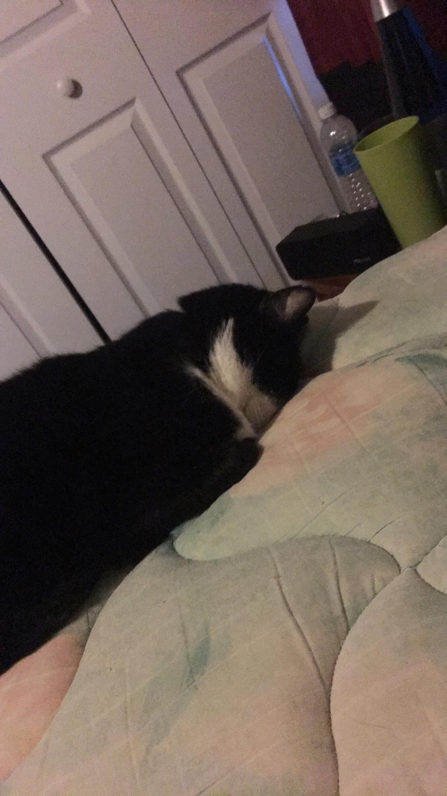

About the Author
This page is under construction...
This page is under construction...
I created this site for an Intro to Information Systems class at CCAC in late 2018. Currently enrolled in CCAC, my goal is to transfer to Robert Morris University to get my B.S. in Cyber Forensics and Information Security.
I spend most of time on school and work. I'm currently employed part-time at The Home Depot in Washington County, where I operate various forklifts and heavy equipment to manage overstock freight. I also freelance as an SAT and ACT tutor for high school students.
When I'm not working on school assignments or working, I like to spend my time relaxing at home with my cat, Domino; either watching netflix or reading a book.
